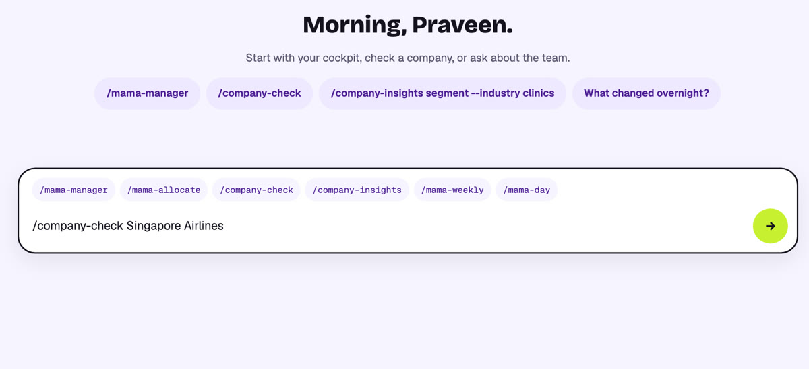
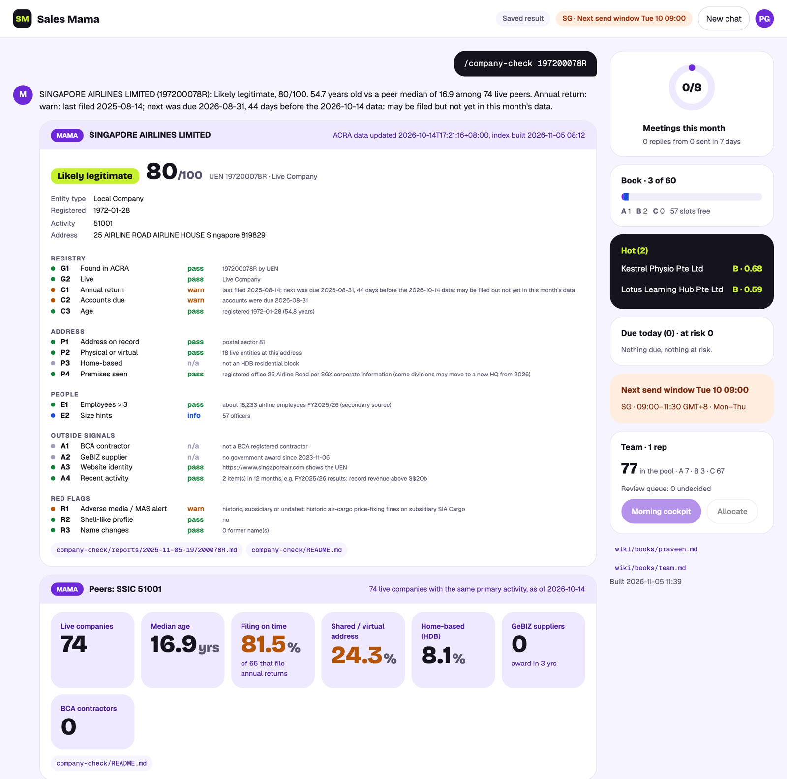

One command. Registry rules in under a second, three verifier subagents on the web, a deterministic verdict with every reason. Real run on Singapore Airlines.
/company-check 197200078RUEN or company name
Ask · /company-check chip in the consolecompany-check/reports/<date>-<uen>.md
Result · every check with its reason